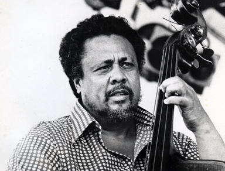

찰스 밍거스
재즈 신에 상당한 영향력을 행사한 찰스 밍거스(Charlse Mingus)는 미국의 재즈 베이시스트이다
애리조나 주 노갈레스에서 태어났지만, 대부분의 유년기는 로스앤젤레스에서 보냈다.
부모는 독실한 개신교 신자여서 밍거스도 어릴 적 찬송가를 비롯한 개신교 음악에 익숙했지만, 이내 집에서는 그다지 달가워하지 않던 재즈나 블루스에도 심취했다.
당시 인종차별 때문에 정규 음악 교육의 혜택은 거의 받지 못했지만, 학창 시절에도 트롬본과 첼로를 아마추어 수준으로나마 교습받는 등 계속 음악 수업을 받았다.
1930년대 후반에 레드 칼랜더에게 콘트라베이스 연주법을 배우기 시작했는데, 다만 그 때까지도 첼로에 대한 미련을 버리지 못해 개인적으로 계속 연습했다.
이후 당시 뉴욕 필하모닉의 수석 콘트라베이시스트였던 허먼 레인스하겐(Herman Reinshagen)에게 약 5년 동안 클래식 연주법을 비롯한
체계적인 베이스 연주법을 다시 배웠고, 로이드 리스로부터 작곡 개인 레슨을 받기도 했다.
1940년대 초반부터 바니 비가드와 루이 암스트롱 등의 밴드가 순회 공연을 할 때 비상근 베이시스트로 협연하면서 재즈계에 발을 들였고,
이후 비브라폰 연주자 라이어널 햄턴의 밴드에서 연주하면서 조금씩 두각을 나타내기 시작했다.
1950년대 초반에는 당시 비밥의 혁신가로 유명했던 찰리 파커와 잼 세션과 연주를 벌이면서 많은 영향을 받았고,
파커 밴드의 드러머 맥스 로치와 함께 데뷰 레코드라는 음반사를 설립하기도 했다. 1953년에는 파커와 로치, 디지 길레스피,
버드 파웰과 함께 퀸텟(5중주단)으로 팀을 이루어 잠시 공연했는데, 이 중 캐나다 토론토의 매시 홀 실황이 재즈 팬들에게 'The Quintet'으로
회자되는 전설은 아니고 레전드인 명반으로 남아 있다.
하지만 이 때까지만 해도 밍거스는 주로 비밥 베이시스트 정도로만 평가받고 있었을 뿐이었다.
같은 해 밍거스는 비밥 이후의 실험적인 음악을 위해 재즈 작곡가의 워크숍(Jazz Composer's Workshop)을 만들었고,
그 동안 코드(화음)에 기반한 즉흥 연주 위주였던 재즈 스타일에서 가능한한 악보화된 음악으로 재즈를 연주하는 시도를 했다.
하지만 이 시도는 기존 재즈 뮤지션이나 청중 모두에게 너무 분석적이고 되레 재즈의 자유를 제한하는 것처럼 여겨졌고,
밍거스 자신도 악보로 기보하기에는 재즈의 세계가 너무 다양하다고 인정하고 포기했다.
그 대신 1950년대 중반에는 연주자들에게 피아노나 베이스 연주로 자신의 의도를 설명한 뒤,
자신 뿐 아니라 모든 연주자들이 초기 뉴올리언스 재즈처럼 더 자유롭게 그 틀에서 즉흥 연주로 음악을 뽑아나가는 방식의 새로운 워크숍을 열었다.
이런 방식으로 1956년에 애틀랜틱에서 나온 앨범이 '피테칸트로푸스 에렉투스(Pithecanthropus Erectus)'(라틴어로 직립원인)였고,
밍거스가 사이드맨이 아닌 리더로 낸 앨범 중 최초의 걸작으로 손꼽힌다.
비록 인류학 지식이 턱없이 부족한 밍거스가 어설프게 곡을 설명한게 까이기는 했지만, 듀크 엘링턴 이후 그와 다른 방식의 대규모 재즈 작품을 발표한 것이 크게 주목을 받았다.
1972년에 콜럼비아에서 'Let My Children Hear Music'을 발표하면서 다시 복귀했고,
1974년에는 카네기홀 무대에서 단독 콘서트를 개최하는 등 제2의 전성기를 맞이하는 것처럼 보였다.
하지만 1970년대 중반에 흔히 루 게릭 병으로 부르는 근위축성측색경화증에 걸리면서 베이스 연주가 힘들어지게 되었고,
1977년 이후 베이스 연주가 불가능해지자 작곡으로 관심을 돌렸지만 이내 손발이 모두 마비되면서 이것도 제대로 할 수 없었다.
결국 조니 미첼이 자신에게 헌정하는 앨범인 'Mingus'의 작업에 참가한 것을 끝으로 멕시코의 쿠에르나바카에서 요양하던 도중 세상을 떠났고,
유해는 유언에 따라 화장되어 인도의 갠지스 강에 뿌려졌다.